How to run the Refactor phase using IBM watsonx Code Assistant for Z Refactoring Assistant
- Open the PuTTy app from the taskbar at the bottom (A) of the demo window. It may take a few minutes to open.
- Select wca4z-ra from the Saved Sessions box (A), and click Open (B). 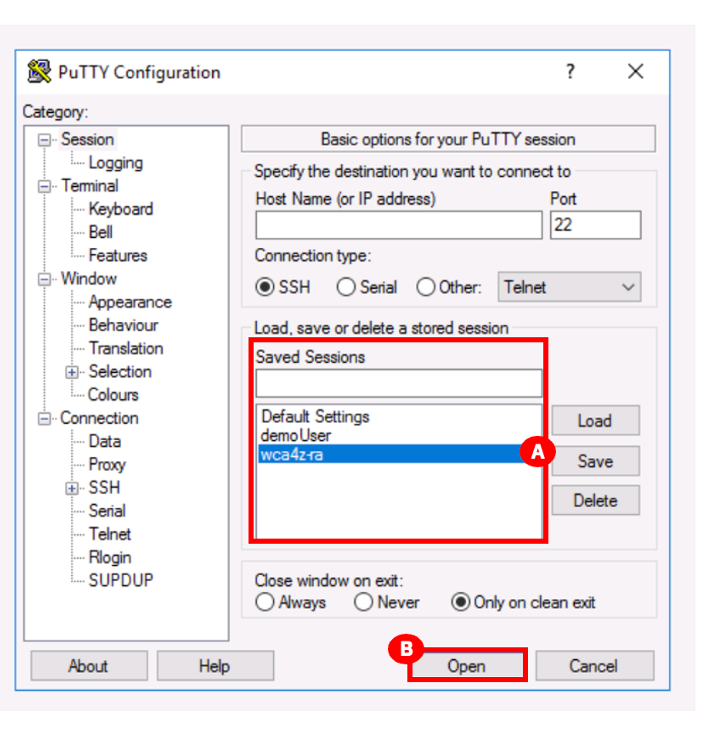
- After clicking Open in the previous step the following warning message will pop-up. Click Accept (A). This warning will only be displayed one time if you do this demo again. 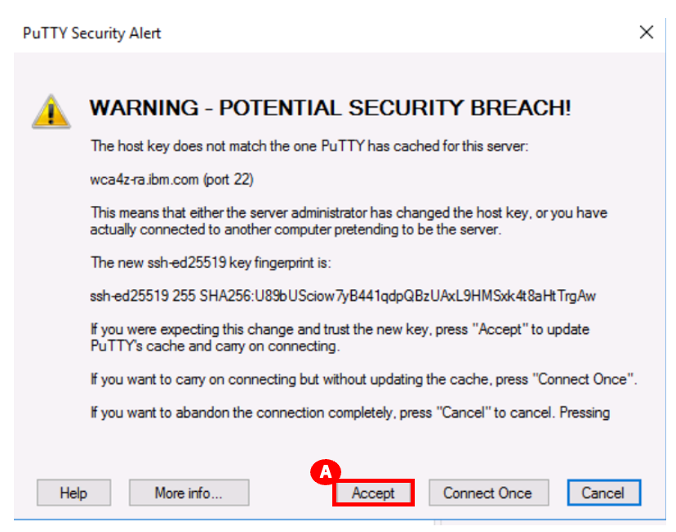
- A script will run in PuTTy to start the Refactoring Assistant. When you see the text IBM Watson code assistant for Z Refactoring Assistant started (A) at the bottom of the PuTTy window, you can close the PuTTy window by clicking the X (B) in the top-right corner. You will be asked Are you sure you want to close the session?. Click OK (C). 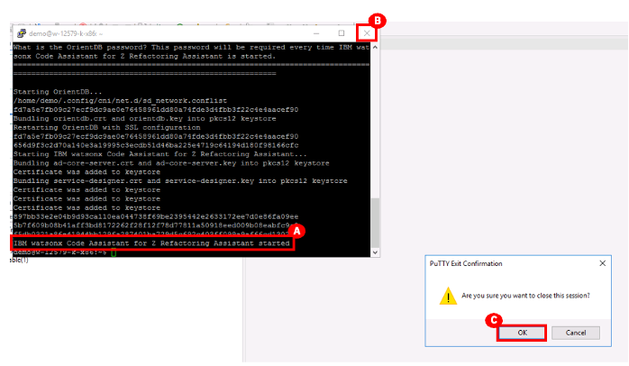
- Click the Firefox icon (A) in the taskbar of the demo window to open it. It may take a few minutes to open.
- Click the IBM watsonx Code Assistant for Z Refactoring Assistant link in the Favorites bar at the top or click wca4z-ra.ibm below the Firefox search bar (A). 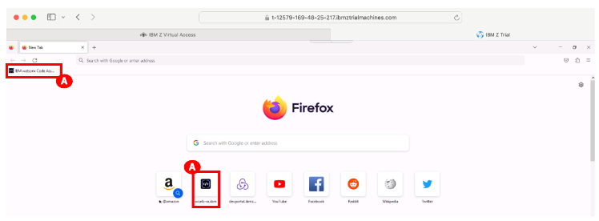
- Login with the following credentials, and click Log in (C) to proceed to the IBM watsonx Code Assistant for Z Refactoring Assistant: - Email address: dev@wca4z-ra.ibm.com (A) - Password: password (B) 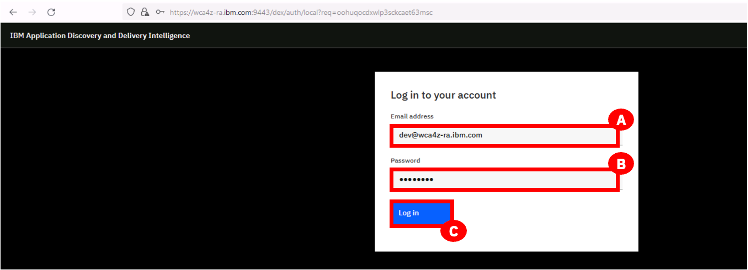
- After logging in, you will see following tabs:
- My workspaces (A) (the default)
- Workspaces shared with me (B) 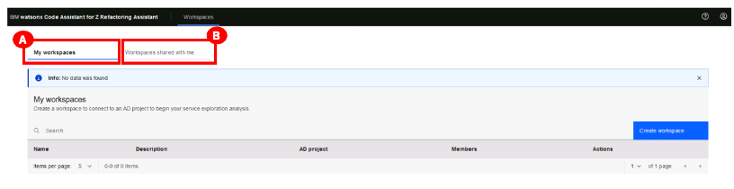 After building a project in the Understand phase, you can create a workspace to work on that project with IBM watsonx Code Assistant for Z Refactoring Assistant.
- In the My workspaces tab, click Create workspace on the right (A). 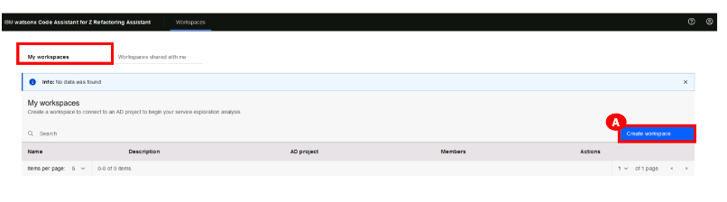
- In the Create workspace dialog box:
- Type a name for the workspace that you want to create. For example: WCA4Z-DEM-WS (A).
- Optionally, add a description in the Description box (B). For example: Workspace for WCA4Z for GenApp application.
- Click the AD Project dropdown list, and select the project that you built with the IBM Application Discovery (AD) Build Client. In this lab, select GenApp (C).
- Click Create (D) to create the workspace. 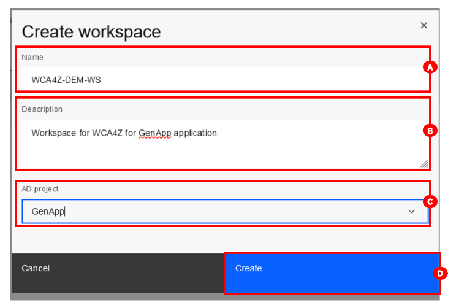
- The GenApp workspace’s Graph tab (A) is displayed. Click in the Search bar (B) at the top. You will see the Artifact type drop-down menu. 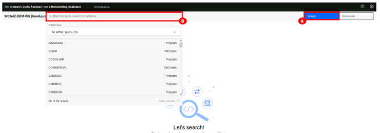
- Select All artifact types (it’s likely the default) to see a dropdown list of the different artifact types (A).
- Select CICS transactions (B). 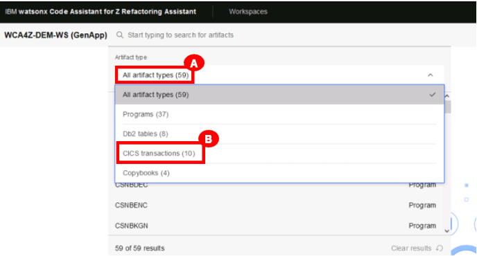
- From the dropdown list of transactions, double-click the SSC1 artifact (A) to open it. 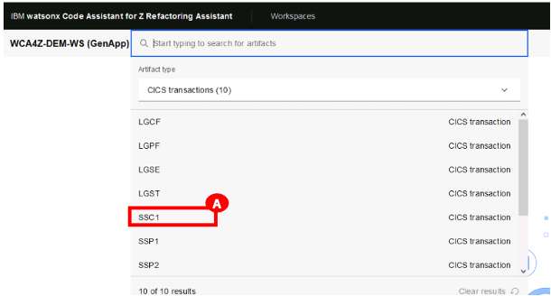
- The SSC1 transaction graph opens. Zoom out by 10% (A) using the magnifying glass icon (bottom left) until you can see the complete callgraph in the window. 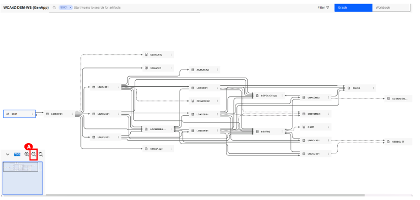
- The entire graph should be displayed after zooming out. Locate and click on the CUSTOMER (A) table to highlight the flow of program dependencies for this table. 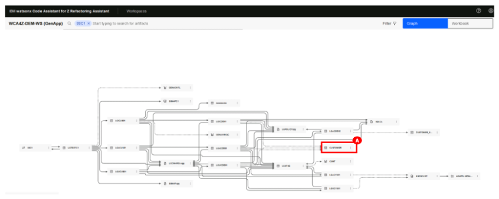
-
In the Understand phase, you checked the callgraph for SSC1 transactions and then looked at the INSERT-CUSTOMER query in the LGACDB01 code.
Now click the ellipsis icon (3 dots) beside LGACDB01 (A). You are presented with the following actions (B): - View properties - Identify conditional statements. - Identify paragraphs. - Identify tables/file access statements. 18. Select Identify conditional statements (C) to display all conditional statements in the code in the order of importance/complexity. 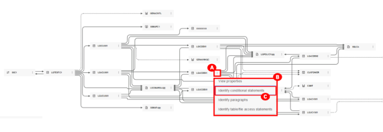 19. The screen will switch to Workbook tab (A) that displays the key conditional statements in the code in the order of importance/complexity (B). 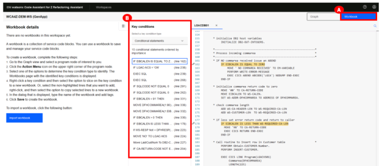 20. Select the Graph tab (A) on the top right to return to the Graph tab (that’s where you were in steps 17/18). 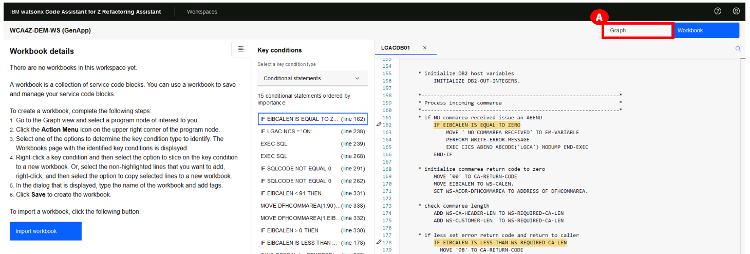 21. Repeat the same thing you did in Steps 17/18, only this time select Identify paragraphs (C). 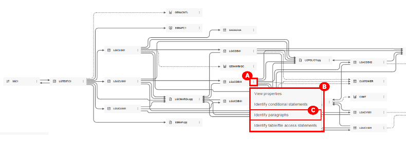 22. The screen will switch to the Workbook tab with a paragraph identification form. You will see 3 sections: - Workbook details (A) on the left. - Paragraphs in the code (B), in the order of importance/complexity, in the middle section. - The artifact’s code (C) in the right section. 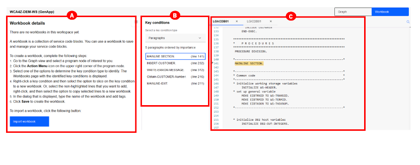 23. Click INSERT-CUSTOMER (A) in the Key conditions box where Select a key condition type drop-down is set to Paragraphs to jump to this code on the right. 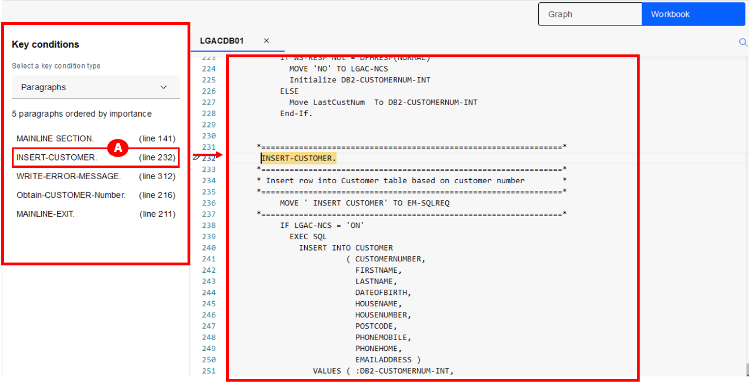 24. For Windows users: Click the INSERT-CUSTOMER text (line 232) in the code, then right-click (A) to see the Slice on paragraph to new workbook option. Double-click Slice on paragraph to new workbook (B).
For Mac users: Click the INSERT-CUSTOMER text (line 232) in the code, then right-click (A) to see the Slice on paragraph to new workbook option. Click Slice on paragraph to new workbook (B). 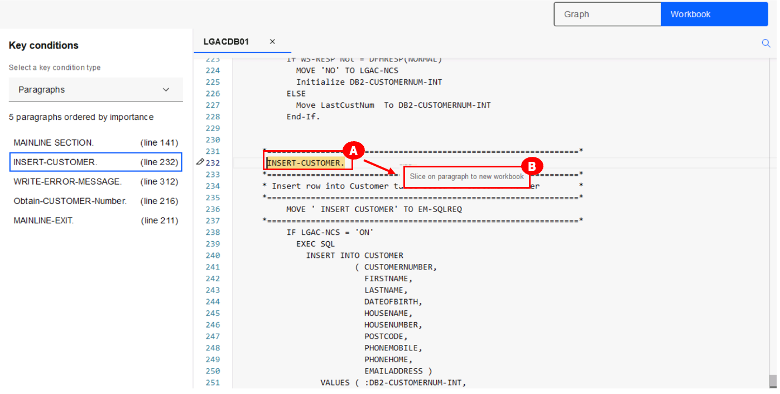
NOTE: Mac users: When you right-click, if the Slice on paragraph to new workbook option does not appear, please update your Mac Systems Settings by clicking the Mac apple icon from your top toolbar > select System Settings > Trackpad. In your Trackpad preferences, update your Secondary click to Click in Bottom Right Corner. Then hover over INSERT-CUSTOMER and click the bottom-right corner of your trackpad to see the Slice on paragraph to new workbook option. 25. The Slice to a new workbook pop-up window will appear. Enter LGACDB01 (A) in the Workbook name field, and click Save (B). 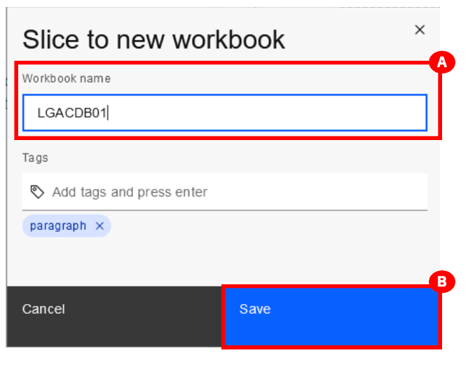 26. The selected paragraph of code will be sliced into a new workbook (called LGACDB01) and displayed on the left (A). Note how the selected code is marked with a dotted blue line in the code editor on the right (B). 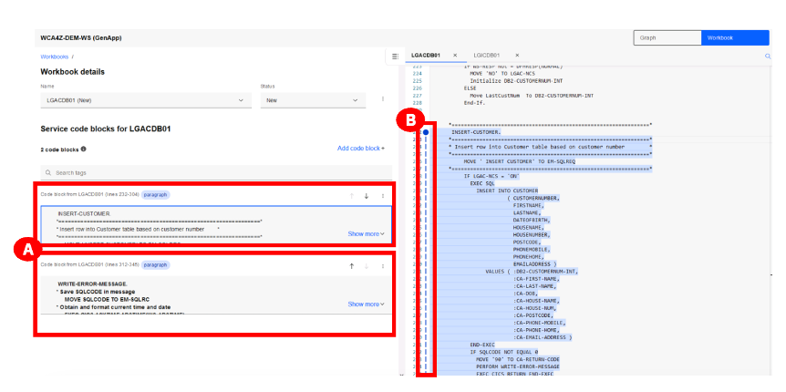 27. In the Workbook details section, click the ellipsis icon (3 dots) beside Status (A). 28. Select the Export option to export the sliced code (B). An Export workbox LGACDB01 window will appear. Click Save (C). 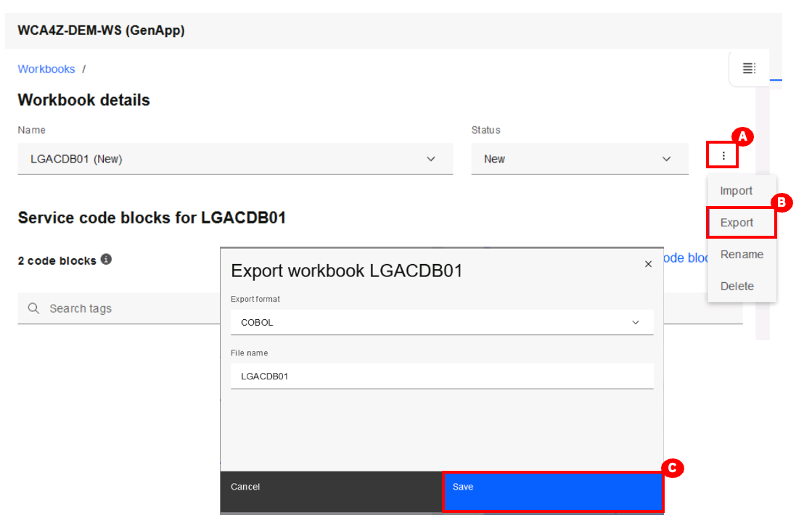 29. A pop-up window will appear with a default location to save the exported sliced code. Click Desktop on the left (A) and navigate to the following: Desktop\WCAZ Lab Data\nazare-demo-cics-genapp\base\src\cobol (B). Then click Save (C) to save the exported code. 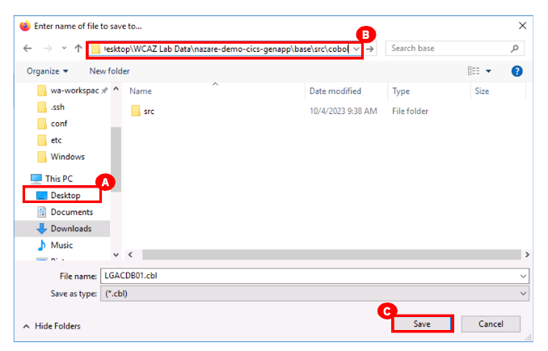